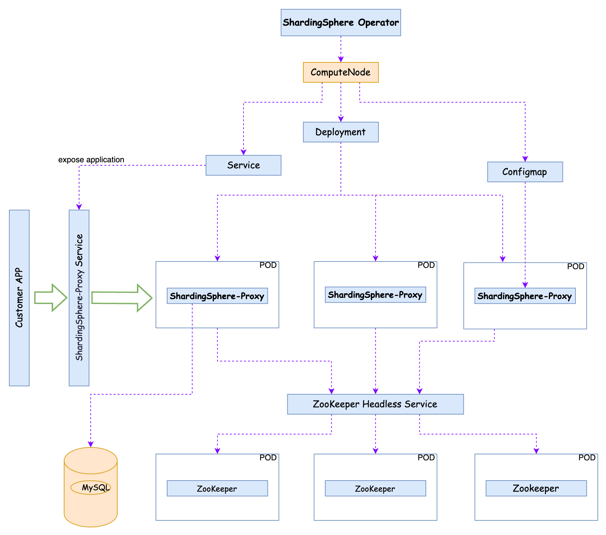

ShardingSphere Operator 是 Kubernetes Operator 模型的实践。它将 ShardingSphere Proxy 的维护经验变成了可执行的程序，并借助 Kubernetes 的声明式和“调谐”特性进行实现。
ShardingSphere Operator 将从计算节点、存储节点甚至混沌故障都抽象为 Kubernetes 自定义资源对象 CRD，由用户者负责编写相应的 CRD 配置，由 Operator 负责执行和保障期望的状态。
如果想要安装试用，请阅读“安装 Operator”小节，如果想了解 CRD 的配置，请阅读“CRD 介绍”小节。
Operator 目前支持 Helm Charts 快速部署，配置文件目录为：apache-shardingsphere-operator-charts。用户可以根据需要采用在线安装或源码安装。
kubectl create ns shardingsphere-operator
helm repo add shardingsphere https://apache.github.io/shardingsphere-on-cloud
helm repo update
helm install shardingsphere-cluster shardingsphere/apache-shardingsphere-operator-charts -n shardingsphere-operator --set zookeeper.persistence.enabled=false
kubectl create ns shardingsphere-operator
cd charts/apache-shardingsphere-operator-charts/
helm dependency build
cd ../
helm install shardingsphere-cluster apache-shardingsphere-operator-charts -n shardingsphere-operator --set zookeeper.persistence.enabled=false
| 名称 | 描述 | 默认值 |
|---|---|---|
nameOverride |
nameOverride 参数会使用 common.names.fullname 模板覆盖名称 | shardingsphere-proxy |
| 名称 | 描述 | 默认值 |
|---|---|---|
operator.replicaCount |
副本数 | 1 |
operator.image.repository |
镜像名称 | apache/shardingsphere-operator |
operator.image.pullPolicy |
镜像拉取策略 | IfNotPresent |
operator.image.tag |
镜像版本 | 0.3.0 |
operator.imagePullSecrets |
私有镜像仓库密钥 | [] |
operator.resources |
资源配置 | {} |
operator.health.healthProbePort |
健康检查端口 | 8080 |
在利用 Operator Charts 进行安装的时候用户可以根据需要选择是否安装配套的治理中心，相关参数如下：
| 名称 | 描述 | 默认值 |
|---|---|---|
zookeeper.enabled |
同时部署 Zookeeper 的开关 | true |
zookeeper.replicaCount |
副本数 | 1 |
zookeeper.persistence.enabled |
是否持久化 | false |
zookeeper.persistence.storageClass |
持久卷 StorageClass | "" |
zookeeper.persistence.accessModes |
持久卷访问模式 | ["ReadWriteOnce"] |
zookeeper.persistence.size |
持久卷大小 | 8Gi |
注意：目前通过 Charts 安装的治理中心仅支持 Bitnami Zookeeper Charts。
ShardingSphereProxy 和 ShardingSphereProxyServerConfig 提供了对 ShardingSphereProxy 部署和配置的基本描述，Operator 会将 CRD 中提供的配置转换为对应的 Kubernetes 负载并提交创建。其中 ShardingSphereProxy 主要影响基础资源相关配置，ShardingSphereProxyServerConfig 影响 server.yaml 等运行时配置。
注意：ShardingSphereProxy 和 ShardingSphereProxyServerConfig 计划于 0.4.0 版本起停止支持。
ShardingSphereProxy
| 配置项 | 描述 | 类型 | 示例 |
|---|---|---|---|
.spec.version |
ShardingSphere Proxy 版本 | string | 5.5.0 |
.spec.serviceType.type |
服务类型 | string | NodePort |
.spec.serviceType.nodePort |
服务 NodePort | number | 33307 |
.spec.replicas |
副本数 | number | 3 |
.spec.proxyConfigName |
挂载的目标配置 | string | |
.spec.port |
暴露的端口 | number |
| 配置项 | 描述 | 类型 | 示例 |
|---|---|---|---|
.spec.automaticScaling.enable |
自动扩容开关 | bool | false |
.spec.automaticScaling.scaleUpWindows |
自动扩容上限 | number | |
.spec.automaticScaling.scaleDownWindows |
自动扩容下限 | number | |
.spec.automaticScaling.target |
自动扩容目标值 | number | |
.spec.automaticScaling.maxInstance |
自动扩容最大实例数 | number | |
.spec.automaticScaling.minInstance |
自动扩容最小实例数 | number | |
.spec.customMetrics |
自定义指标 | []autoscalingv2beta2.MetricSpec | |
.spec.imagePullSecrets |
镜像仓库密钥 | v1.Local,ObjectReference | |
.spec.mySQLDriver.version |
MySQL 驱动版本 | string | |
.spec.resources |
资源配置 | v1.ResourceRequirements | |
.spec.livenssProbe |
健康检查 | v1.Probe | |
.spec.readinessProbe |
就绪检查 | v1.Probe | |
.spec.startupProbe |
启动检查 | v1.Probe |
ShardingSphereProxyServerConfig
| 配置项 | 描述 | 类型 | 示例 |
|---|---|---|---|
.spec.mode.type |
string | 运行模式配置，支持 Standalone 和 Cluster | string |
.spec.mode.repository.type |
string | 治理中心类型，支持 ZooKeeper 和 Etcd | string |
.spec.mode.repository.props.namespace |
string | 治理中心命名空间（非 K8s 命名空间） | governance_ds |
.spec.mode.repository.props.server-lists |
string | 治理中心列表 | zookeeper.default:2181 |
.spec.mode.repository.props.retryIntervalMilliseconds |
number | 重试间隔 | 500 |
.spec.mode.repository.props.maxRetries |
number | 客户端最大重试次数 | 3 |
.spec.mode.repository.props.timeToLiveSeconds |
number | TTL | 600 |
.spec.mode.repository.props.operationTimetoutMilliseconds |
number | 超时时间 | 5000 |
.spec.mode.repository.props.digest |
摘要 | string | |
.spec.authority.users[0].user |
计算节点用户名，格式: |
string | root@% |
.spec.authority.users[0].password |
计算节点用户名，格式: |
string | root@% |
.spec.authority.priviliege.type |
计算节点权限设置，默认值为 ALL_PRIVILEGES_PERMITTED | string | ALL_PRIVILEGES_PERMITTED |
.spec.props.kernel-executor-size |
内核执行大小 | number | |
.spec.props.check-table-metadata-enabled |
表元数据检查开关 | bool | |
.spec.props.proxy-backend-query-fetch-size |
后端查询大小 | number | |
.spec.props.check-duplicate-table-enabled |
重复表检查开关 | bool | |
.spec.props.proxy-frontend-executeor-size |
前端执行大小 | number | |
.spec.props.proxy-backend-executor-suitable |
后端执行器 | string | |
.spec.props.proxy-backend-driver-type |
后端驱动类型 | string | |
.spec.props.proxy-frontend-database-protocol-type |
前端数据库协议类型 | string |
ShardingSphereProxy 示例：
apiVersion: shardingsphere.apache.org/v1alpha1
kind: ShardingSphereProxy
metadata:
name: shardingsphere-cluster-shardingsphere-proxy
namespace: shardingsphere-operator
spec:
version: 5.5.0
serviceType:
type: ClusterIP
replicas: 3
proxyConfigName: "shardingsphere-cluster-shardingsphere-proxy-configuration"
port: 3307
mySQLDriver:
version: "5.1.47"
ShardingSphereProxyServerConfig 示例：
apiVersion: shardingsphere.apache.org/v1alpha1
kind: ShardingSphereProxyServerConfig
metadata:
name: shardingsphere-cluster-shardingsphere-proxy-configuration
namespace: shardingsphere-operator
spec:
authority:
privilege:
type: ALL_PERMITTED
users:
- password: root
user: root@%
mode:
repository:
props:
maxRetries: 3
namespace: governance_ds
operationTimeoutMilliseconds: 5000
retryIntervalMilliseconds: 500
server-lists: 'shardingsphere-cluster-zookeeper.shardingsphere-operator:2181'
timeToLiveSeconds: 600
type: ZooKeeper
type: Cluster
props:
proxy-frontend-database-protocol-type: MySQL
ComputeNode 用来描述 ShardingSphere 集群中的计算节点，通常指的是 Proxy。由于 ShardingSphere Proxy 是无状态应用，所以可以利用 Kubernetes 原生的工作负载 Deployment 进行管理，同时使用 ConfigMap 和 Service 实现对于启动配置和服务发现的配置。利用 ComputeNode 不仅可以将 Deployment、ConfigMap 和 Service 中的关键配置统一，还匹配了 ShardingSphere 的语义，帮助 Operator 快速锁定工作负载。如图：

目前 Operator 想要使用 ComputeNode 需要打开相应的 FeatureGate：
helm install [RELEASE_NAME] shardingsphere/apache-shardingsphere-operator-charts --set operator.featureGates.computeNode=true --set proxyCluster.enabled=false
| 配置项 | 描述 | 类型 | 示例 |
|---|---|---|---|
metadata.name |
计划部署的名称 | string | foo |
metadata.namespace |
计划部署的命名空间，默认为 default | string | |
spec.storageNodeConnector.type |
后端驱动类型 | string | mysql |
spec.storageNodeConnector.version |
后端驱动版本 | string | 5.1.47 |
spec.serverVersion |
ShardingSphere Proxy 版本 | string | 5.5.0 |
spec.replicas |
计划部署的实例数量 | number | 3 |
spec.selectors |
实例选择器,同 Deployment.Spec.Selectors | number | 3 |
spec.portBindings[0].name |
对外暴露的端口名称 | string | |
spec.portBindings[0].containerPort |
对外暴露的容器端口号 | number | 3307 |
spec.portBindings[0].servicePort |
对外暴露的服务端口号 | number | 3307 |
spec.portBindings[0].procotol |
对外暴露的端口协议 | string | TCP |
spec.serviceType |
对外暴露的服务类型 | string | ClusterIP |
spec.bootstrap.serverConfig.authority.privilege.type |
计算节点权限设置，默认值为 ALL_PRIVILEGES_PERMITTED | string | ALL_PRIVILEGES_PERMITTED |
spec.bootstrap.serverConfig.authority.users[0].user |
计算节点用户名，格式: |
string | root@% |
spec.bootstrap.serverConfig.authority.users[0].password |
计算节点密码 | string | root |
spec.bootstrap.serverConfig.mode.type |
运行模式配置，支持 Standalone 和 Cluster | string | Cluster |
spec.bootstrap.serverConfig.mode.repository.type |
治理中心类型，支持 ZooKeeper 和 Etcd | string | ZooKeeper |
spec.bootstrap.serverConfig.mode.repository.props |
治理中心属性配置，可以参考[常用的 ServerConfig Repository Props](#常用的\ ServerConfig\ Repository\ Props\ 配置) | map[string]string |
| 配置项 | 描述 | 示例 |
|---|---|---|
spec.bootstrap.serverConfig.mode.repository.props.timeToLiveSeconds |
TTL | 600 |
spec.bootstrap.serverConfig.mode.repository.props.serverlists |
治理中心列表 | zookeeper.default:2181 |
spec.bootstrap.serverConfig.mode.repository.props.retryIntervalMilliseconds |
重试间隔 | 500 |
spec.bootstrap.serverConfig.mode.repository.props.operationTimeoutMilliseconds |
超时时间 | 5000 |
spec.bootstrap.serverConfig.mode.repository.props.namespace |
治理中心命名空间（非 K8s 命名空间） | governance_ds |
spec.bootstrap.serverConfig.mode.repository.props.maxRetries |
客户端最大重试次数 | 3 |
| 配置项 | 描述 | 类型 | 示例 |
|---|---|---|---|
spec.probes.livenessProbe |
健康检查探针 | corev1.Probe | |
spec.probes.readinessProbe |
就绪检查探针 | corev1.Probe | |
spec.probes.startupProbe |
启动检查探针 | corev1.Probe | |
spec.imgaePullSecrets |
镜像密钥 | corev1.LocalObjectReference | |
spec.env |
环境变量 | corev1.Env | |
spec.resources |
资源声明 | corev1.ResourceRequirements | |
spec.bootstrap.agentConfig.plugins.logging.file.props |
Agent 日志插件配置属性 | map[string]string | |
spec.bootstrap.agentConfig.plugins.metrics.prometheus.host |
Agent 指标插件配置主机 | map[string]string | |
spec.bootstrap.agentConfig.plugins.metrics.prometheus.port |
Agent 指标插件配置端口 | map[string]string | |
spec.bootstrap.agentConfig.plugins.metrics.prometheus.props |
Agent 指标插件配置属性 | map[string]string | |
spec.bootstrap.agentConfig.plugins.tracing.openTracing.props |
Agent 追踪插件配置属性 | map[string]string | |
spec.bootstrap.agentConfig.plugins.tracing.openTelemetry.props |
Agent 追踪插件配置属性 | map[string]string |
以下是一个基础的 ComputeNode CRD 配置示例，可以拉起一个3节点的 ShardingSphere Proxy 集群。
apiVersion: shardingsphere.apache.org/v1alpha1
kind: ComputeNode
metadata:
labels:
app: foo
name: foo
spec:
storageNodeConnector:
type: mysql
version: 5.1.47
serverVersion: 5.5.0
replicas: 3
selector:
matchLabels:
app: foo
portBindings:
- name: server
containerPort: 3307
servicePort: 3307
protocol: TCP
serviceType: ClusterIP
bootstrap:
serverConfig:
authority:
privilege:
type: ALL_PERMITTED
users:
- user: root@%
password: root
mode:
type: Cluster
repository:
type: ZooKeeper
props:
timeToLiveSeconds: "600"
server-lists: ${PLEASE_REPLACE_THIS_WITH_YOUR_ZOOKEEPER_SERVICE}
retryIntervalMilliseconds: "500"
operationTimeoutMilliseconds: "5000"
namespace: governance_ds
maxRetries: "3"
props:
proxy-frontend-database-protocol-type: MySQL
注意：请先准备一个可以正常运行的 ZooKeeper 集群
StorageNode 是 Operator 对于数据源的描述，提供对数据源的生命周期管理。它的使用需要配合 StorageProvider，现在支持 AWS RDS 和 CloudNative PG 。如图：

注意：StorageNode 是可选 CRD，用户可根据实际场景决定是否需要通过 StorageNode 管理数据源。
目前 Operator 想要使用 StorageNode 需要打开相应的 FeatureGate：
helm install [RELEASE_NAME] shardingsphere/apache-shardingsphere-operator-charts --set operator.featureGates.storageNode=true --set operator.storageNodeProviders.aws.region='' --set operator.storageNodeProviders.aws.accessKeyId='' --set operator.storageNodeProviders.aws.secretAccessKey='' --set operator.storageNodeProviders.aws.enabled=true
| 配置项 | 描述 | 类型 | 示例 |
|---|---|---|---|
metadata.name |
计划部署的名称 | string | foo |
metadata.namespace |
计划部署的命名空间，默认为 default | string | |
spec.storageProviderName |
StorageProvider 名称 | string | aws-rds-instance |
| 配置项 | 描述 | 类型 | 示例 |
|---|---|---|---|
spec.storageProviderSchema |
初始化 Schema | string | sharding_db |
spec.replicas |
Aurora 集群规模 | number | 2 |
以下是一个 AWS RDS Aurora 对应的 StorageNode 配置说明，可以拉起相应的 Aurora 集群：
apiVersion: shardingsphere.apache.org/v1alpha1
kind: StorageNode
metadata:
name: storage-node-with-aurora-example
annotations:
"storageproviders.shardingsphere.apache.org/cluster-identifier": "storage-node-with-aurora-example"
"storageproviders.shardingsphere.apache.org/instance-db-name": "test_db"
# 以下是自动注册所需的 Annotations
"shardingsphere.apache.org/register-storage-unit-enabled": "false" # 如果需要自动注册，请设置为 `true`
"shardingsphere.apache.org/logic-database-name": "sharding_db"
"shardingsphere.apache.org/compute-node-name": "shardingsphere-operator-shardingsphere-proxy"
spec:
schema: "test_db"
storageProviderName: aws-aurora-cluster-mysql-5.7
replicas: 2 # 目前仅 Aurora 有效
StorageProvider 声明了不同的 StorageNode 提供方，比如 AWS RDS 和 CloudNative PG。
| 配置项 | 描述 | 类型 | 示例 |
|---|---|---|---|
metadata.name |
计划部署的名称 | string | foo |
spec.storageProviderName |
StorageProvider 名称 | string | aws-rds-instance |
以下声明了一个 AWS Aurora 的 StorageProvider，其中包含了对相关属性的设置：
apiVersion: shardingsphere.apache.org/v1alpha1
kind: StorageProvider
metadata:
name: aws-aurora-cluster-mysql-5.7
spec:
provisioner: storageproviders.shardingsphere.apache.org/aws-aurora
reclaimPolicy: Delete
parameters:
masterUsername: "root"
masterUserPassword: "root123456"
instanceClass: "db.t3.small"
engine: "aurora-mysql"
engineVersion: "5.7"
helm uninstall shardingsphere-cluster -n shardingsphere-operator
为了使用创建好的 ShardingSphere Proxy 集群，您需要使用 DistSQL 去配置相应的资源及规则，如数据库资源，分片规则 等等。